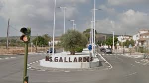
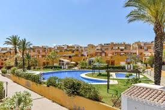
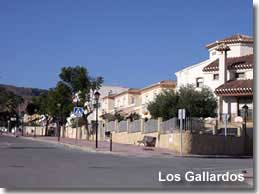

Los gallardos es un pueblo pequeño, en el levante almeriense, que cuenta con alrededor de 3000 habitantes entre los cuales encuentran diferentes nacionalidades, de paises como Ecuador, Marruecos, Inglaterra, entre otros.

Los Gallardos cuenta tambien con sus direntes comarcas en sus alrededores en la cual encontramos Huerta Nueva, Bédar, Alfaix, La perulaca, Las pastoras. Que son unas zonas muy bonitas para visitar en familia o con amigos.

El pueblo en si es muy tranquilo, agradable, la mayoria de gente que encontramos ene este pueblo es muy buena y se llevan bien etre si. Es un pueblo acogedor que recibe a cualquier persona que quiera vivir en el pueblo.
